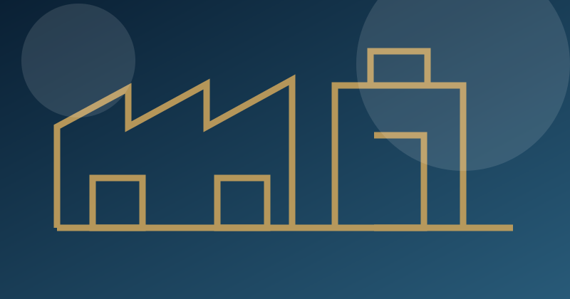
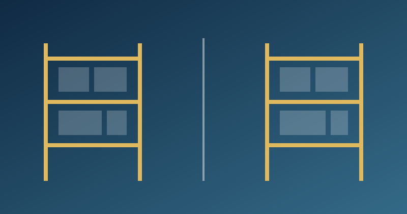

عملية مستقرة
Stable Process
عمليات واضحة وقابلة للتنفيذ والقياس والتحسين المستمر.Ahmed Hassouna
مستشار نظم العمليات والأعمال
تحويل المشكلات التشغيلية إلى أنظمة مستدامة
Stable Process
عمليات واضحة وقابلة للتنفيذ والقياس والتحسين المستمر.Stable System
قواعد عمل وملكية وحدود واضحة تدعم القرار وتقلل التباين.Stable Knowledge
معرفة تشغيلية موثقة تتحول إلى إجراءات وتدريب واعتماد.المنهجية
أبدأ من الواقع، أصمم منطق العمل، ثم أثبت القدرة داخل التشغيل اليومي.
Diagnosis
فهم الواقع وتحديد الفجوات والأسباب الجذرية.Design
تصميم قواعد العمل والتدفقات والمسؤوليات والمؤشرات.Stabilization
تثبيت الممارسة بالحوكمة والإجراءات والتدريب والمراجعة.القدرات
كل بطاقة تعرض اسم القدرة بالإنجليزية ثم الاسم العربي المعتمد.
الأداء التشغيلي
قياس فجوات الأداء وتحسين التدفق واستخدام الموارد.نظم الأعمال
تصميم قواعد الأعمال وتدفقات العمل وحدود التكامل.الحوكمة التشغيلية
تحديد الملكية والصلاحيات ونقاط الرقابة والمراجعة.الجودة والوقاية
تحويل الجودة من الفحص النهائي إلى الوقاية والتحكم.حوكمة المخازن
ربط الحركة بالمستند والكود وأمر التشغيل والتسوية.توحيد المعرفة التشغيلية
تحويل الخبرة إلى إجراءات وتدريب واعتماد ومصفوفات مهارات.تحسين العمليات
إزالة الاختناقات وتقليل التباين وتحسين دورة العمل.التحول التشغيلي
تحويل المبادرات المتفرقة إلى إطار تشغيلي متكامل ومحكوم.أعمال مختارة
يتناوب المعرض بين المشروعات تلقائيًا، ويمكن التحكم فيه يدويًا أو بالسحب على الهاتف.

تحسين الطاقة الإنتاجية وكفاءة الموارد البشرية
منظومة قياس وتشغيل تربط التدفق بالمستهدفات والإنتاجية والحوافز.Operational Performanceعرض تفاصيل المشروع ←
حوكمة المخازن وضبط استهلاك الخامات
منظومة رقابة تربط المخزون بالمستند وأمر التشغيل والاستهلاك المعياري.Warehouse Governanceعرض تفاصيل المشروع ←هندسة الجودة والوقاية
نظام جودة وقائي يربط المتطلبات بالعملية والفحص وعدم المطابقة.Quality & Preventionعرض تفاصيل المشروع ←التحول التشغيلي والحوكمة
إطار محكوم يربط المبيعات والطلبات والإنتاج بملكية وحدود تكامل واضحة.Business Systemsعرض تفاصيل المشروع ←توحيد التشغيل واستدامة المعرفة
تحويل الخبرة الفردية إلى إجراءات وتدريب واعتماد وبوابات جودة.Knowledge Standardizationعرض تفاصيل المشروع ←مركز المعرفة
فكرة واحدة واضحة في كل مقال، مرتبطة بممارسة تشغيلية قابلة للتطبيق.
قبل طلب السرعة، يجب فهم أين يضيع الوقت وكيف يتحرك العمل فعلًا.
اقرأ المقالالأداة لا تحل غموض المسؤولية ولا تحدد من يملك القرار.
اقرأ المقالغموض ملكية البيانات والقرار يحول التكامل إلى تكرار وتعارض.
اقرأ المقاللا أبدأ بالأداة؛ أبدأ بالواقع التشغيلي ومنطق القرار.
الأداة لا تصنع النظام؛ النظام هو الذي يحدد الأداة المناسبة.تواصل
محادثة واضحة حول الواقع، الفجوة، والقدرة التي تحتاج المؤسسة إلى بنائها.